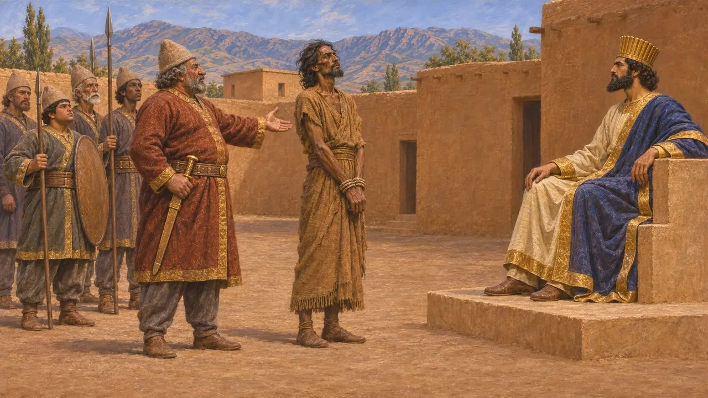
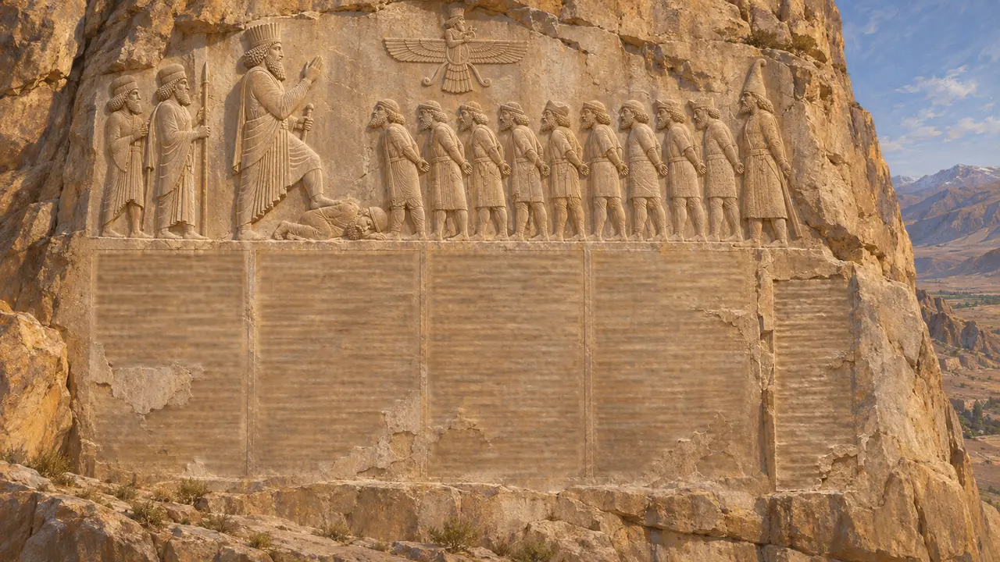
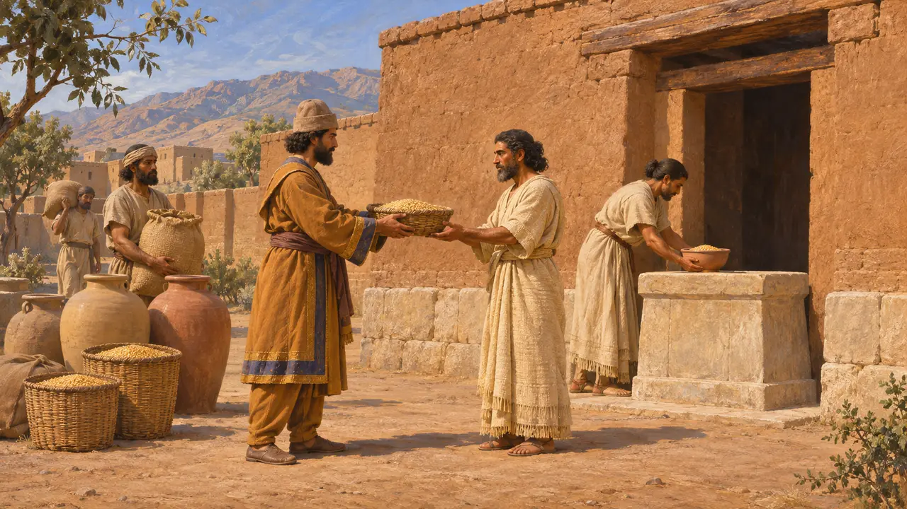
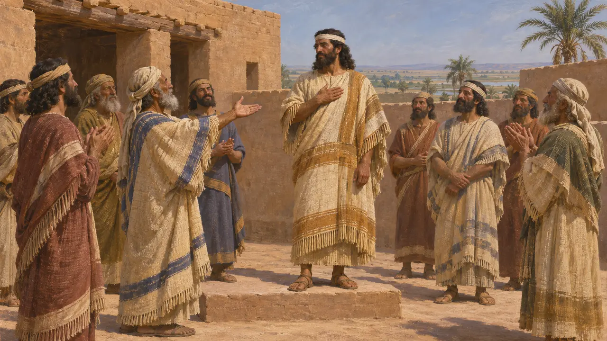
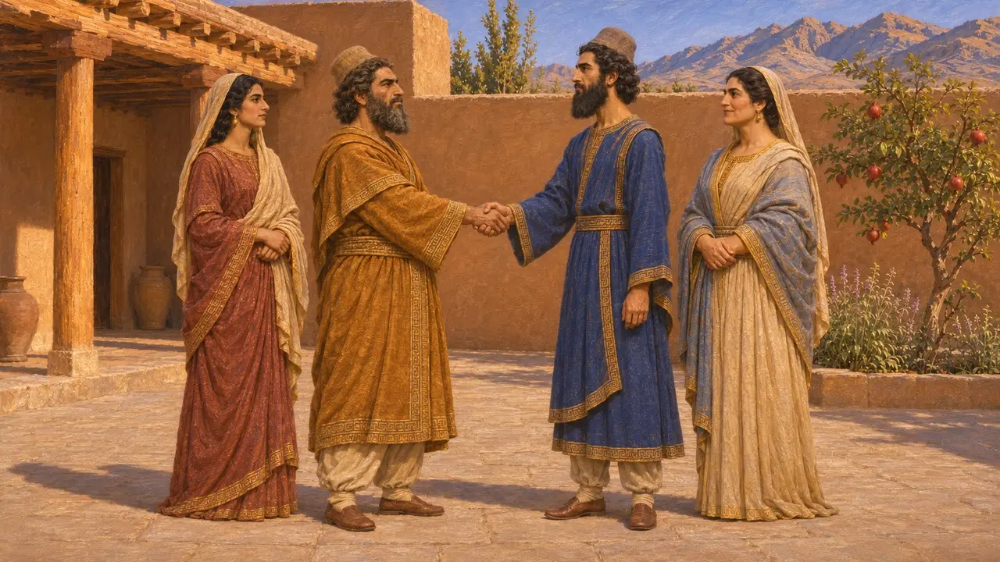

Энциклопедия › Битвы и события

Третье эламское восстание
Восстание Элама под предводительством Атамаиты, подавленное Гобрием, около 520–519 гг. до н. э.
В игре: Уровень 5: Хартия
На втором и третьем году правления Дария Элам вновь восстал против него под началом человека, которого древнеперсидский текст называет Атамаитой. Дарий послал персидского вельможу Гобрия, который разбил эламитов и привёл Атамаиту к Царю, чтобы тот был казнён. Это было последнее восстание, записанное в Бехистуне; оно вспыхнуло год или более спустя после подавления великих мятежей 522–521 годов до н. э.
В игре: Уровень «Сузы» начинается с этого восстания и победы Гобрия. Игра датирует уровень 521 годом, но Бехистун помещает восстание на второй и третий годы правления Дария, около 520–519 годов, и сам не называет его третьим.

Что говорит надпись Дария
Свидетельства эпохиВ пятой колонке Бехистунской надписи сказано, что Элам восстал на втором и третьем году правления Царя и что эламиты поставили своим вождём человека по имени Атамаита. Дарий послал во главе войска Гаубаруву, перса и своего подданного. Гобрий сразился с эламитами, разбил их, захватил Атамаиту и привёл его к Дарию, который велел его казнить, и страна вновь стала владением Дария.
DB §71

Колонка, добавленная после основного текста
Свидетельства эпохиКолонна V была высечена спустя некоторое время после первых четырёх. Она сохранилась только на древнеперсидском, без эламской и вавилонской версий, и во многом повреждена. Рельеф над ней изображает Гаумату и мятежных царей 522–521 годов, к которым позднее добавлен вождь саков Скунха, но Атамаиты среди фигур нет. Называть его восстание третьим эламским мятежом, после мятежей Ассины и Мартии, — это современный подсчёт, выведенный из повествования надписи.
R. Schmitt, The Bisitun Inscriptions of Darius the Great: Old Persian Text, 1991

Вероломные эламиты
СпорныйДалее в тексте говорится, что эламиты были вероломны и не почитали Ахурамазду, а Дарий почитал, и потому поступил с ними так, как хотел. Некоторые историки прежде видели в этом поворот к религиозной нетерпимости. Другие, в частности Хенкельман, указывают, что эламские боги по-прежнему получали приношения из царского хозяйства, о чём говорят таблички из Персепольского укрепления. С этой точки зрения фраза — обвинение в политической нелояльности, облечённое в религиозную форму.
DB §72; W. Henkelman, The Other Gods Who Are, 2008

Кто такой Атамаита
СпорныйБехистунская надпись называет лишь его имя и говорит, что эламиты избрали его своим вождём. Некоторые учёные предположили, что это Атта-хамити-Иншушинак, ново-эламский правитель, известный по надписи, и тогда мятеж был попыткой восстановить местную династию. Другие считают, что совпадения имён и дат слишком ненадёжны, чтобы опираться на них, и вопрос остаётся открытым.
D. T. Potts, The Archaeology of Elam, 1999

Гобрий, родич Царя
Античное свидетельствоГеродот сообщает, что Дарий женился на дочери Гобрия ещё до того, как стал царём. Он также пишет, что Гобрий женился на сестре Дария, так что их сын Мардоний приходился Царю племянником. Сам Бехистун называет Гаубаруву, сына Мардунии, одним из шести персов, помогавших Дарию убить Гаумату, и ничего не говорит о браке. Родственная связь, делающая Гобрия тестем Дария, известна только из Геродота.
Herodotus 7.2; Herodotus 7.5; DB §68
Источники
- Behistun inscription, DB §71-72
- R. Schmitt, The Bisitun Inscriptions of Darius the Great: Old Persian Text, 1991
- P. Briant, From Cyrus to Alexander, 2002
- W. Henkelman, The Other Gods Who Are, 2008
- D. T. Potts, The Archaeology of Elam, 1999
- Herodotus 7.2, 7.5